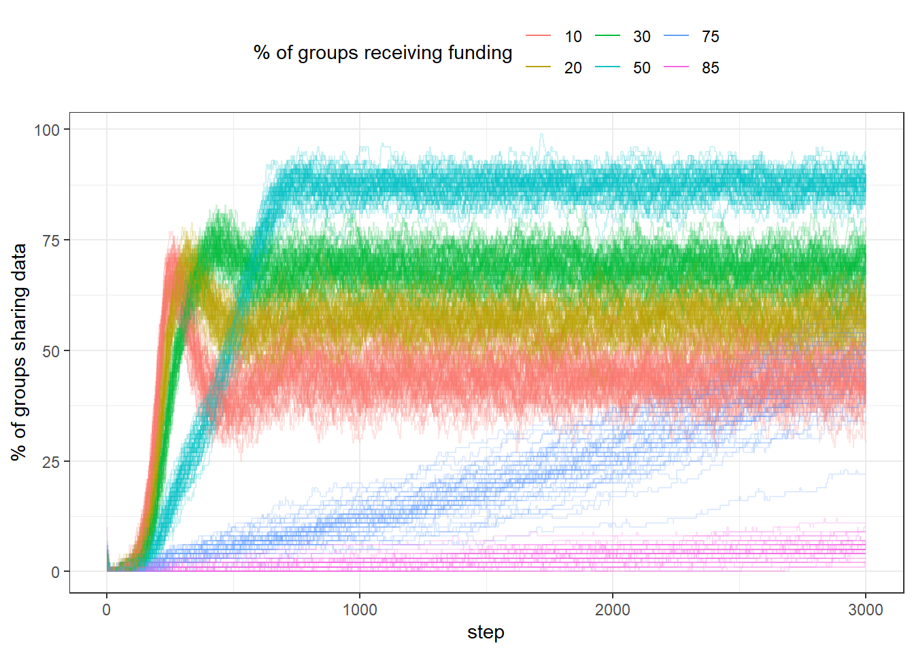
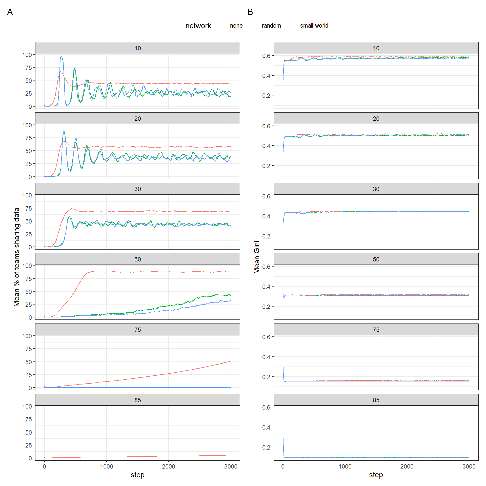
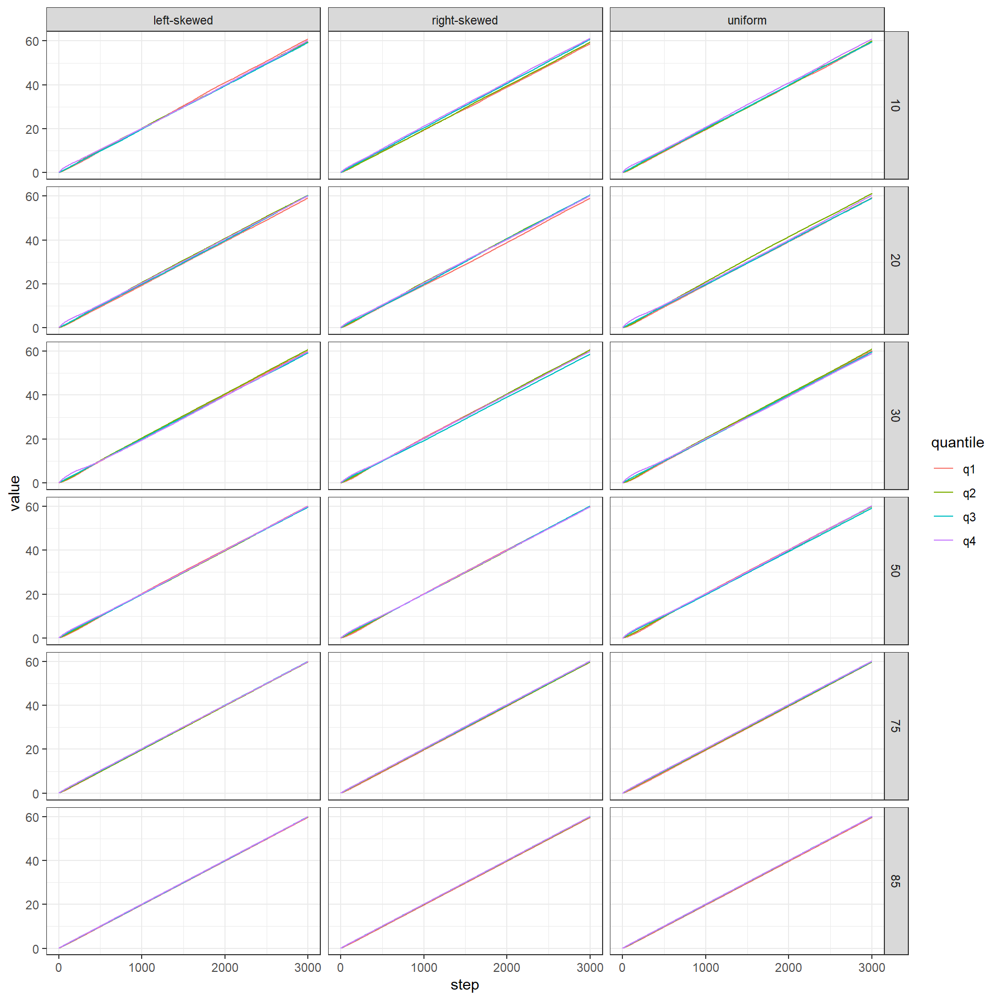
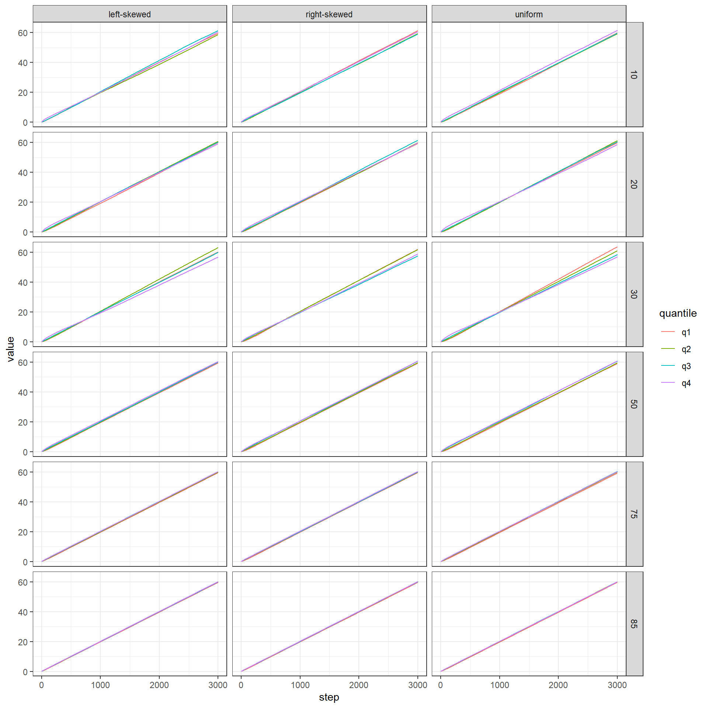
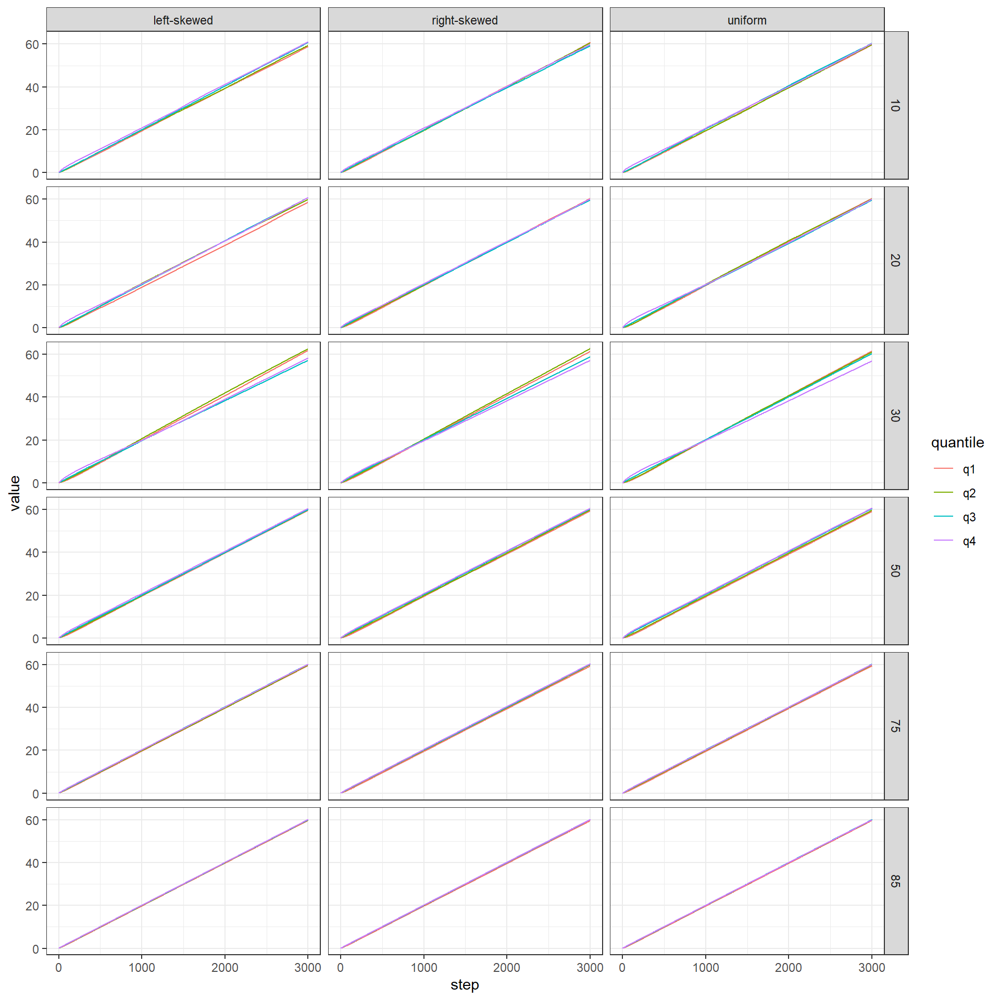

Baseline analysis
Read data
Code
df <- tar_read(baseline_selection)Effect of grant size
Code
no_network <- df %>%
filter(network == "none")
no_network_unif_dist <- no_network %>%
filter(init_dist == "uniform")
pdata <- no_network_unif_dist %>%
group_by(step, funded_share) %>%
summarise(mean_gini = mean(resources_gini),
mean_sharing = mean(perc_sharing))
p1 <- pdata %>%
ggplot(aes(step, mean_gini, colour = as.factor(funded_share))) +
geom_line() +
labs(colour = "% of groups receiving funding",
y = "Gini of resources")
p2 <- pdata %>%
ggplot(aes(step, mean_sharing, colour = as.factor(funded_share))) +
geom_line() +
labs(colour = "% of groups receiving funding",
y = "% of groups sharing data") Code
p1 / p2 +
plot_layout(guides = "collect") & theme(legend.position = "top")
The above is very interesting: we are not changing incentives, however sharing rate still varies widely. This is a consequence of how exposed agents are to the funding agency. If only few are funded, not many come into contact. However, if almost everyone is funded, the policy seems to work only very slowly, because there is no advantage in sharing or not (because anyways almost everyone is funded). It is also interesting that sharing initially rises, but then drops again (for low values of funded share).
The gini is in some sense a direct effect of selectivity of funding and thus not particularly interesting when doing this baseline aspect.
Below we visualise variability in the runs.
Code
no_network %>%
# filter(funded_share == 50) %>%
ggplot(aes(step, perc_sharing, group = run_number,
colour = as.factor(funded_share))) +
geom_line(alpha = .2) +
theme(legend.position = "top") +
labs(colour = "% of groups receiving funding",
y = "% of groups sharing data") +
guides(colour = guide_legend(override.aes = list(alpha = 1)))
Comparing network effects
Code
uniform <- df %>%
filter(init_dist == "uniform")
pdata <- uniform %>%
select(run_number, network, funded_share, step, perc_sharing, resources_gini) %>%
group_by(network, funded_share, step) %>%
summarise(mean_gini = mean(resources_gini),
mean_sharing = mean(perc_sharing)) %>%
pivot_longer(c(mean_gini, mean_sharing))
p_gini <- pdata %>%
filter(name == "mean_gini") %>%
ggplot(aes(step, value, colour = network)) +
geom_line() +
facet_wrap(vars(funded_share), ncol = 1) +
labs(y = "Mean Gini")
p_sharing <- pdata %>%
filter(name == "mean_sharing") %>%
ggplot(aes(step, value, colour = network)) +
geom_line() +
facet_wrap(vars(funded_share), ncol = 1) +
labs(y = "Mean % of teams sharing data")
p_sharing + p_gini +
plot_layout(guides = "collect") +
plot_annotation(tag_levels = "A") &
theme(legend.position = "top")
Effect on success of different groups
Code
group_success <- no_network %>%
group_by(step, funded_share, init_dist) %>%
summarise(across(contains("mean_funds"), .fns = mean))Code
pdata <- group_success %>%
pivot_longer(contains("mean_funds"), names_to = "quantile",
names_pattern = ".*_(q\\d)")
pdata %>%
ggplot(aes(step, value, colour = quantile)) +
geom_line() +
facet_grid(rows = vars(funded_share),
cols = vars(init_dist))
There is no difference in how successful groups are based on their initial quantile, when there are not networks.
Below we provide the same for a random network, and for a small network.
Code
group_success <- df %>%
filter(network == "random") %>%
group_by(step, funded_share, init_dist) %>%
summarise(across(contains("mean_funds"), .fns = mean))
pdata <- group_success %>%
pivot_longer(contains("mean_funds"), names_to = "quantile",
names_pattern = ".*_(q\\d)")
pdata %>%
ggplot(aes(step, value, colour = quantile)) +
geom_line() +
facet_grid(rows = vars(funded_share),
cols = vars(init_dist))
Code
group_success <- df %>%
filter(network == "small-world") %>%
group_by(step, funded_share, init_dist) %>%
summarise(across(contains("mean_funds"), .fns = mean))
pdata <- group_success %>%
pivot_longer(contains("mean_funds"), names_to = "quantile",
names_pattern = ".*_(q\\d)")
pdata %>%
ggplot(aes(step, value, colour = quantile)) +
geom_line() +
facet_grid(rows = vars(funded_share),
cols = vars(init_dist))
In both cases there are slight differences, but I assume these are just random variation. Maybe the methodology of grouping teams based on their initial resources into four quartiles is not very useful - these are large groups that hide more fine-grained processes.